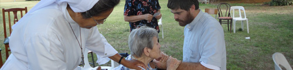

-

-

-

-

-

-

- 
-

-

-

-


HOGAR DE ANCIANOS“ VILLA DE LA SANTÍSIMA VIRGEN MARÍA”
Tropero Moreira Nº 3552. (CP 6712) Cortinez - Luján Pcia. de Bs. As.
Telefax: (02323) 48-8310
E-mail: margacosta@hotmail.com
FINALIDAD
La principal actividad de las hermanas de esta casa es la atención de las ancianas y ancianos que se encuentran internados en el Pensionado y también de las hermanas mayores.
En el Hogar las hermanas se dedican las 24 horas a la pastoral de las personas mayores a las cuales brindan una cariñosa atención con todo el respeto que se merecen los ancianos, quienes han gastado su vida en el trabajo, en la construcción de su hogar y en la
educación de los hijos.
Se les ofrece la posibilidad de acercarse a Dios por medio de la Palabra, de la oración y de los Sacramentos.
Son acompañados humana y espiritualmente tratando de hacerles más placentera y tranquila esas vidas cargadas de años, de sabiduría, de nostalgias, y a veces de dolores físicos y psicológicos.
El deseo es brindarles lo que necesitan: una atención personalizada y el tiempo adecuado para escucharlos.
El Hogar cuenta con amplios espacios internos y externos, galerías, extenso parque arbolado, jardines con gran variedad de flores y plantas, parrilla con mesadas y una granja fresca y natural.
VIDA APOSTOLICA Y CARITATIVA AÑO 2008
La principal actividad de las hermanas de esta casa es la atención de las ancianas y ancianos que se encuentran internados en el Pensionado y también de las hermanas mayores.
Este trabajo exige realizar el apostolado todo el día ya que el primer deber y obligación de las hermanas es la caridad para con ellos que siempre requieren una mano generosa sea para el cuidado físico o espiritual que no consiste solo en la buena alimentación e higiene, sino que necesitan una atención personalizada y el tiempo adecuado para escucharlos. Cuando recién ingresan se les da la contención necesaria no solo a los abuelos sino también a su familia.
El gran amor que sentía la Madre Fundadora hacia los más necesitados y desposeídos es el impulso diario que tienen las hermanas para realizar esta gran obra de misericordia, sabiendo que ésta es obra de Dios. En los abuelos miran el rostro de Dios, los cuidan con cariño haciendo en muchos casos las veces de los familiares que no pueden atenderlos en estos momentos de sus vidas cuando más necesitan de cuidado, amor y cariño. Las hermanas son concientes que todo lo que realizan es pastoral, y que todas las tareas, sean directas o indirectas es para el bien de los ancianos que se encuentran en el geriátrico.
La Hna. Amelia Alfonso visita diariamente a los abuelos para llevarles consuelo y rezar juntos el santo rosario. Avisa al sacerdote cuando alguno le pide recibir el sacramento de la Unción de los enfermos.
Todos los abuelos/as tuvieron la posibilidad de recibir la Unción de los Enfermos que se administró una vez en el año con una preparación especial, o también lo recibieron antes los que necesitaron.
Además asistieron a los actos litúrgicos, especialmente a la Celebración de la Santa Misa. Diariamente los que estuvieron dispuestos, rezaron el Rosario con la comunidad religiosa.
Cada hermana, responsable en su sección acompañó al médico que controló periódicamente el estado de cada paciente y les administró la medicación necesaria cada día.
Las hermanas han sido siempre conscientes que la contención que brindan a los ancianos y a las hermanas mayores, es la base para que sea más llevadero el deterioro físico que es propio de la edad. Los acompañaron cuando requirieron internación por el estado de salud y los visitaron todos los días mientras duró el tratamiento que realizaban. Asimismo asistieron a los funerales de los que fallecieron invitando a los familiares a participar de las Eucaristías que ofrecen en sufragio de las almas de los que partieron a la Casa del Señor.